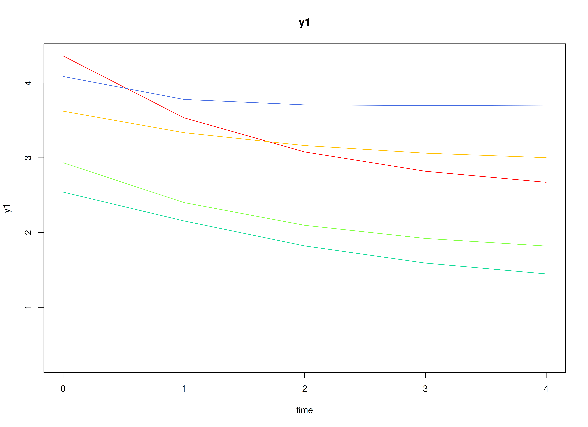
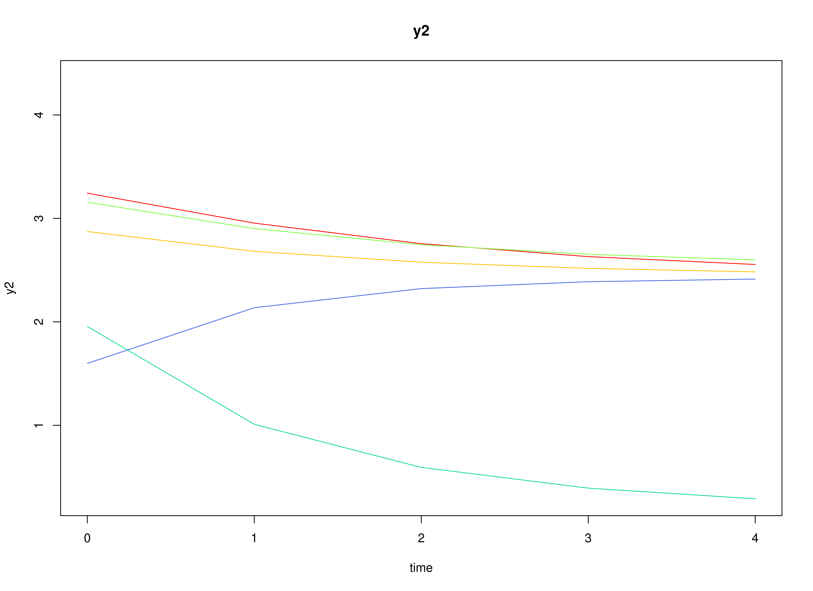
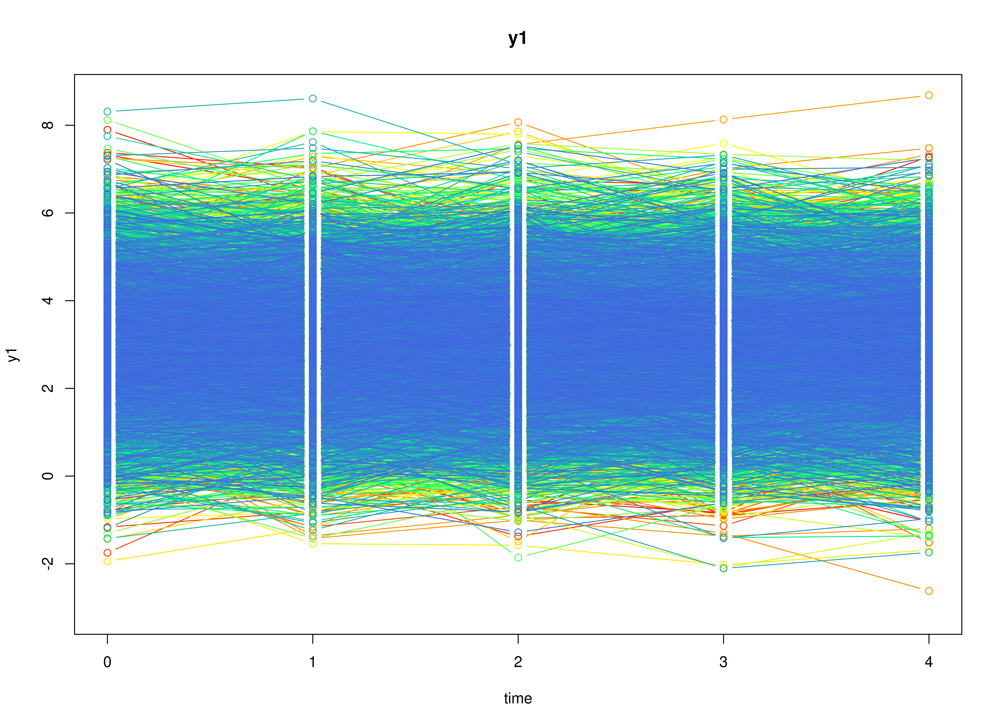
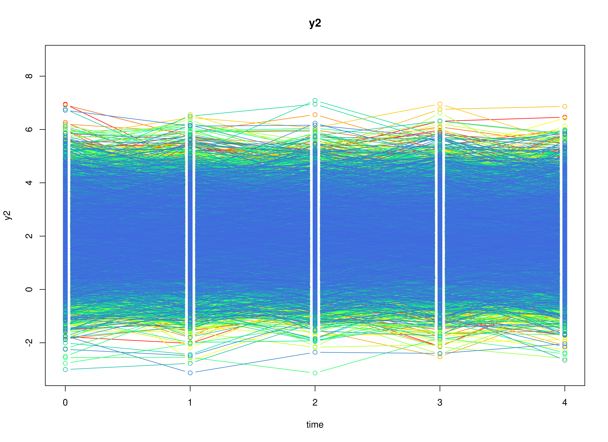
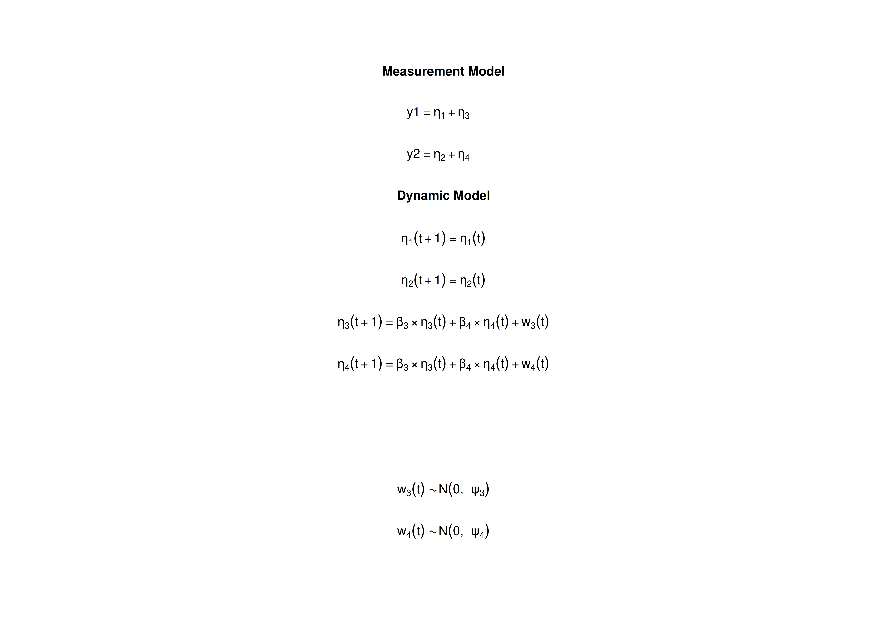

The Random Intercept Cross-Lagged Panel Model
Ivan Jacob Agaloos Pesigan
2026-11-01
Source:vignettes/ri-clpm.Rmd
ri-clpm.RmdOverview
The random intercept cross-lagged panel model (RI-CLPM) studies how two variables measured on the same individuals over several occasions relate to each other over time, for example, self-esteem and depression measured once a year (Hamaker et al., 2015). Each individual has a stable level on each variable, called a trait, and fluctuates around it from occasion to occasion. The model separates the two: the traits describe stable differences between individuals, and the cross-lagged effects describe how a fluctuation in one variable is followed by a fluctuation in the other at the next occasion, within the same individual. The traditional cross-lagged panel model (CLPM) has no traits, so it mixes the two kinds of differences; it is the VAR model in the vignette on vector autoregressive models, fitted to panel data.
The RI-CLPM is usually fitted as a structural equation model (SEM) (Mulder & Hamaker, 2021). It can also be written as a state space model: the traits are latent states that never change, and the within-person components are latent states that follow a vector autoregressive process.
This tutorial does three things:
- It writes the RI-CLPM as a state space model.
- It simulates data from the model with
SimSSMFixed(). - It fits the model to the simulated data with
dynr(state space) and withlavaan(SEM), and compares both sets of estimates with the values used to simulate the data.
No prior knowledge of state space models is needed.
Model
The measurement model is given by \[\begin{equation} \left( \begin{array}{c} Y_{1_{i, t}} \\ Y_{2_{i, t}} \\ \end{array} \right) = \left( \begin{array}{cccc} 1 & 0 & 1 & 0 \\ 0 & 1 & 0 & 1 \\ \end{array} \right) \left( \begin{array}{c} \eta_{1_{i, t}} \\ \eta_{2_{i, t}} \\ \eta_{3_{i, t}} \\ \eta_{4_{i, t}} \\ \end{array} \right) \end{equation}\] where \(Y_{1_{i, t}}\) and \(Y_{2_{i, t}}\) are the two observed variables at time \(t\) and individual \(i\), \(\eta_{1_{i, t}}\) and \(\eta_{2_{i, t}}\) are the traits of the two variables, and \(\eta_{3_{i, t}}\) and \(\eta_{4_{i, t}}\) are their within-person components.
In words, each observed score is the individual’s trait plus the individual’s deviation from it on that occasion. As in most applications of the RI-CLPM, there is no measurement error.
The dynamic structure is given by \[\begin{equation} \left( \begin{array}{c} \eta_{1_{i, t}} \\ \eta_{2_{i, t}} \\ \eta_{3_{i, t}} \\ \eta_{4_{i, t}} \\ \end{array} \right) = \left( \begin{array}{cccc} 1 & 0 & 0 & 0 \\ 0 & 1 & 0 & 0 \\ 0 & 0 & \beta_{33} & \beta_{34} \\ 0 & 0 & \beta_{43} & \beta_{44} \\ \end{array} \right) \left( \begin{array}{c} \eta_{1_{i, t - 1}} \\ \eta_{2_{i, t - 1}} \\ \eta_{3_{i, t - 1}} \\ \eta_{4_{i, t - 1}} \\ \end{array} \right) + \left( \begin{array}{c} 0 \\ 0 \\ \zeta_{3_{i, t}} \\ \zeta_{4_{i, t}} \\ \end{array} \right), \quad \mathrm{with} \quad \left( \begin{array}{c} \zeta_{3_{i, t}} \\ \zeta_{4_{i, t}} \\ \end{array} \right) \sim \mathcal{N} \left( \mathbf{0}, \left( \begin{array}{cc} \psi_{33} & \psi_{34} \\ \psi_{43} & \psi_{44} \\ \end{array} \right) \right) . \end{equation}\]
In words, the traits stay the same over time: the first two rows have a 1 on the diagonal and no process noise. The within-person components follow a vector autoregressive process. \(\beta_{33}\) and \(\beta_{44}\) are the autoregressive effects: how much of an individual’s deviation from the trait carries over to the next occasion. \(\beta_{34}\) and \(\beta_{43}\) are the cross-lagged effects: \(\beta_{34}\) is the effect of a deviation in the second variable on the deviation in the first variable at the next occasion, and \(\beta_{43}\) the reverse. \(\psi_{33}\), \(\psi_{44}\), and \(\psi_{34}\) are the variances and covariance of the new, unpredictable part of the deviations on each occasion.
The initial condition is given by \[\begin{equation} \boldsymbol{\eta}_{i, 0} \sim \mathcal{N} \left( \boldsymbol{\mu}_{\boldsymbol{\eta} \mid 0}, \boldsymbol{\Sigma}_{\boldsymbol{\eta} \mid 0} \right) \end{equation}\]
\[\begin{equation} \boldsymbol{\mu}_{\boldsymbol{\eta} \mid 0} = \left( \begin{array}{c} \mu_{1} \\ \mu_{2} \\ 0 \\ 0 \\ \end{array} \right) \quad \mathrm{and,} \quad \boldsymbol{\Sigma}_{\boldsymbol{\eta} \mid 0} = \left( \begin{array}{cccc} \sigma_{11} & \sigma_{12} & 0 & 0 \\ \sigma_{21} & \sigma_{22} & 0 & 0 \\ 0 & 0 & \sigma_{33} & \sigma_{34} \\ 0 & 0 & \sigma_{43} & \sigma_{44} \\ \end{array} \right) . \end{equation}\]
Here, \(\mu_{1}\) and \(\mu_{2}\) are the average traits, \(\sigma_{11}\), \(\sigma_{22}\), and \(\sigma_{12}\) are how much individuals differ in their traits and how the two traits covary, for example, positive if individuals with higher self-esteem also tend to have higher well-being. The within-person components have mean zero, because they are deviations from the traits, and are uncorrelated with the traits. \(\sigma_{33}\), \(\sigma_{44}\), and \(\sigma_{34}\) are their variances and covariance at the first occasion.
Data Generation
Notation
Let \(t = 5\) be the number of time points and \(n = 10000\) be the number of individuals.
Let the traits have the means and the covariance matrix
\[\begin{equation} \left( \begin{array}{c} \mu_{1} \\ \mu_{2} \\ \end{array} \right) = \left( \begin{array}{c} 3 \\ 2 \\ \end{array} \right) \quad \mathrm{and,} \quad \left( \begin{array}{cc} \sigma_{11} & \sigma_{12} \\ \sigma_{21} & \sigma_{22} \\ \end{array} \right) = \left( \begin{array}{cc} 1 & 0.5 \\ 0.5 & 1 \\ \end{array} \right) . \end{equation}\]
Let the autoregressive and cross-lagged effects and the process noise covariance matrix be
\[\begin{equation} \left( \begin{array}{cc} \beta_{33} & \beta_{34} \\ \beta_{43} & \beta_{44} \\ \end{array} \right) = \left( \begin{array}{cc} 0.5 & 0.15 \\ 0.1 & 0.4 \\ \end{array} \right) \quad \mathrm{and,} \quad \left( \begin{array}{cc} \psi_{33} & \psi_{34} \\ \psi_{43} & \psi_{44} \\ \end{array} \right) = \left( \begin{array}{cc} 0.5 & 0.1 \\ 0.1 & 0.5 \\ \end{array} \right) . \end{equation}\]
The within-person components start from their stationary
distribution: their covariance matrix at the first occasion is the one
they keep at every later occasion, computed with
SSMCovEta() from the autoregressive and cross-lagged
effects and the process noise covariance matrix,
\[\begin{equation} \left( \begin{array}{cc} \sigma_{33} & \sigma_{34} \\ \sigma_{43} & \sigma_{44} \\ \end{array} \right) = \left( \begin{array}{cc} 0.73 & 0.222 \\ 0.222 & 0.625 \\ \end{array} \right) . \end{equation}\]
R Function Arguments
The simulation functions take covariance matrices as lower triangular
Cholesky factors (the arguments ending in _l). Because the
traits have no process noise and there is no measurement error,
psi and theta have rows and columns of zeros,
and their Cholesky factors are built block by block.
n
#> [1] 10000
time
#> [1] 5
mu0
#> [1] 3 2 0 0
sigma0
#> [,1] [,2] [,3] [,4]
#> [1,] 1.0 0.5 0.0000000 0.0000000
#> [2,] 0.5 1.0 0.0000000 0.0000000
#> [3,] 0.0 0.0 0.7297462 0.2216425
#> [4,] 0.0 0.0 0.2216425 0.6250344
sigma0_l # sigma0_l <- t(chol(sigma0))
#> [,1] [,2] [,3] [,4]
#> [1,] 1.0 0.0000000 0.0000000 0.0000000
#> [2,] 0.5 0.8660254 0.0000000 0.0000000
#> [3,] 0.0 0.0000000 0.8542518 0.0000000
#> [4,] 0.0 0.0000000 0.2594580 0.7468038
alpha
#> [1] 0 0 0 0
beta
#> [,1] [,2] [,3] [,4]
#> [1,] 1 0 0.0 0.00
#> [2,] 0 1 0.0 0.00
#> [3,] 0 0 0.5 0.15
#> [4,] 0 0 0.1 0.40
psi
#> [,1] [,2] [,3] [,4]
#> [1,] 0 0 0.0 0.0
#> [2,] 0 0 0.0 0.0
#> [3,] 0 0 0.5 0.1
#> [4,] 0 0 0.1 0.5
psi_l
#> [,1] [,2] [,3] [,4]
#> [1,] 0 0 0.0000000 0.0000000
#> [2,] 0 0 0.0000000 0.0000000
#> [3,] 0 0 0.7071068 0.0000000
#> [4,] 0 0 0.1414214 0.6928203
nu
#> [1] 0 0
lambda
#> [,1] [,2] [,3] [,4]
#> [1,] 1 0 1 0
#> [2,] 0 1 0 1
theta
#> [,1] [,2]
#> [1,] 0 0
#> [2,] 0 0
theta_l
#> [,1] [,2]
#> [1,] 0 0
#> [2,] 0 0Visualizing the Dynamics Without Process Noise (n = 5 with Different Initial Condition)
Without process noise, each individual’s deviations shrink toward zero, so each trajectory settles at the individual’s trait.


Using the SimSSMFixed Function from the
simStateSpace Package to Simulate Data
Now we add the process noise and simulate the full data set.
as.data.frame() returns the data in long format, one row
per individual and time point, with the columns id,
time, y1, and y2.
library(simStateSpace)
sim <- SimSSMFixed(
n = n,
time = time,
mu0 = mu0,
sigma0_l = sigma0_l,
alpha = alpha,
beta = beta,
psi_l = psi_l,
nu = nu,
lambda = lambda,
theta_l = theta_l,
type = 0
)
data <- as.data.frame(sim)
head(data)
#> id time y1 y2
#> 1 1 0 4.785347 3.5092972
#> 2 1 1 4.758437 3.4784088
#> 3 1 2 4.250888 3.0461680
#> 4 1 3 4.140226 3.8609873
#> 5 1 4 3.736337 4.0710355
#> 6 2 0 3.817745 -0.2774656
summary(data)
#> id time y1 y2
#> Min. : 1 Min. :0 Min. :-2.619 Min. :-3.135
#> 1st Qu.: 2501 1st Qu.:1 1st Qu.: 2.091 1st Qu.: 1.140
#> Median : 5000 Median :2 Median : 2.984 Median : 1.978
#> Mean : 5000 Mean :2 Mean : 2.985 Mean : 1.993
#> 3rd Qu.: 7500 3rd Qu.:3 3rd Qu.: 3.871 3rd Qu.: 2.838
#> Max. :10000 Max. :4 Max. : 8.684 Max. : 7.088
plot(sim)

Model Fitting
We first fit the model with dynr, which estimates state
space models by maximum likelihood using the Kalman filter.
A dynr model is built from pieces that match the
equations above: the data, the initial condition, the measurement model,
the dynamic model, and the noise. Each parameter gets a name (for
example, beta_3_4 for \(\beta_{34}\)), and the same name used in
two places means one shared parameter. The starting values are set to
the population values for convenience; with real data, they would be
rough guesses.
Prepare Initial Condition
The means of the traits are estimated; the means of the within-person components are fixed at zero. The covariance matrix has two free blocks, the traits and the within-person components at the first occasion; the covariances between the blocks are fixed at zero.
dynr_initial <- dynr::prep.initial(
values.inistate = mu0,
params.inistate = c("mu0_1_1", "mu0_2_1", "fixed", "fixed"),
values.inicov = sigma0,
params.inicov = matrix(
data = c(
"sigma0_1_1", "sigma0_2_1", "fixed", "fixed",
"sigma0_2_1", "sigma0_2_2", "fixed", "fixed",
"fixed", "fixed", "sigma0_3_3", "sigma0_4_3",
"fixed", "fixed", "sigma0_4_3", "sigma0_4_4"
),
nrow = 4
)
)Prepare Measurement Model
The loadings are fixed: each observed variable is its trait plus its within-person component.
dynr_measurement <- dynr::prep.measurement(
values.load = lambda,
params.load = matrix(data = "fixed", nrow = 2, ncol = 4),
state.names = c("eta_1", "eta_2", "eta_3", "eta_4"),
obs.names = c("y1", "y2")
)Prepare Dynamic Process
Each formula is one row of the dynamic equation. The traits carry over unchanged; the within-person components have the autoregressive and cross-lagged effects.
dynr_dynamics <- dynr::prep.formulaDynamics(
formula = list(
eta_1 ~ eta_1,
eta_2 ~ eta_2,
eta_3 ~ beta_3_3 * eta_3 + beta_3_4 * eta_4,
eta_4 ~ beta_4_3 * eta_3 + beta_4_4 * eta_4
),
startval = c(
beta_3_3 = beta[3, 3], beta_3_4 = beta[3, 4],
beta_4_3 = beta[4, 3], beta_4_4 = beta[4, 4]
),
isContinuousTime = FALSE
)Prepare Process Noise
Only the within-person components have process noise. The measurement error is fixed at zero.
dynr_noise <- dynr::prep.noise(
values.latent = psi,
params.latent = matrix(
data = c(
"fixed", "fixed", "fixed", "fixed",
"fixed", "fixed", "fixed", "fixed",
"fixed", "fixed", "psi_3_3", "psi_4_3",
"fixed", "fixed", "psi_4_3", "psi_4_4"
),
nrow = 4
),
values.observed = theta,
params.observed = matrix(data = "fixed", nrow = 2, ncol = 2)
)Prepare the Model
The pieces are put together into one model. dynr writes
the model as C code to outfile and compiles it.
model <- dynr::dynr.model(
data = dynr_data,
initial = dynr_initial,
measurement = dynr_measurement,
dynamics = dynr_dynamics,
noise = dynr_noise,
outfile = "ri-clpm.c"
)The plot below shows the model equations with the parameter names.

Fit the Model
results <- dynr::dynr.cook(
model,
debug_flag = TRUE,
verbose = FALSE
)
#> [1] "Get ready!!!!"
#> using C compiler: ‘gcc (Ubuntu 15.2.0-16ubuntu1) 15.2.0’
#> Optimization function called.
#> Starting Hessian calculation ...
#> Finished Hessian calculation.
#> Original exit flag: 3
#> Modified exit flag: 3
#> Optimization terminated successfully: ftol_rel or ftol_abs was reached.
#> Original fitted parameters: 0.4953656 0.1382549 0.08624409 0.3933535
#> -0.6970129 0.1845781 -0.7546108 2.98493 1.993485 0.01991307 0.4917714
#> -0.2996043 -0.3247713 0.3104393 -0.5862764
#>
#> Transformed fitted parameters: 0.4953656 0.1382549 0.08624409 0.3933535
#> 0.4980709 0.09193299 0.4871624 2.98493 1.993485 1.020113 0.5016622 0.9878145
#> 0.7226926 0.2243522 0.6260429
#>
#> Doing end processing
#> Successful trial
#> Total Time: 2.429735
#> Backend Time: 2.422813Summary
The summary lists each estimate with its standard error, \(t\) value, confidence interval, and \(p\) value.
summary(results)
#> Coefficients:
#> Estimate Std. Error t value ci.lower ci.upper Pr(>|t|)
#> beta_3_3 0.495366 0.008877 55.81 0.477968 0.512763 <0.0000000000000002
#> beta_3_4 0.138255 0.007272 19.01 0.124002 0.152508 <0.0000000000000002
#> beta_4_3 0.086244 0.007142 12.07 0.072245 0.100243 <0.0000000000000002
#> beta_4_4 0.393354 0.008636 45.55 0.376427 0.410280 <0.0000000000000002
#> psi_3_3 0.498071 0.004670 106.65 0.488917 0.507224 <0.0000000000000002
#> psi_4_3 0.091933 0.003360 27.36 0.085348 0.098518 <0.0000000000000002
#> psi_4_4 0.487162 0.004587 106.21 0.478173 0.496152 <0.0000000000000002
#> mu0_1_1 2.984930 0.011603 257.25 2.962189 3.007672 <0.0000000000000002
#> mu0_2_1 1.993485 0.011063 180.19 1.971802 2.015168 <0.0000000000000002
#> sigma0_1_1 1.020113 0.021319 47.85 0.978329 1.061897 <0.0000000000000002
#> sigma0_2_1 0.501662 0.015649 32.06 0.470990 0.532334 <0.0000000000000002
#> sigma0_2_2 0.987815 0.018410 53.66 0.951732 1.023897 <0.0000000000000002
#> sigma0_3_3 0.722693 0.016479 43.85 0.690394 0.754991 <0.0000000000000002
#> sigma0_4_3 0.224352 0.011285 19.88 0.202235 0.246470 <0.0000000000000002
#> sigma0_4_4 0.626043 0.013221 47.35 0.600131 0.651955 <0.0000000000000002
#>
#> beta_3_3 ***
#> beta_3_4 ***
#> beta_4_3 ***
#> beta_4_4 ***
#> psi_3_3 ***
#> psi_4_3 ***
#> psi_4_4 ***
#> mu0_1_1 ***
#> mu0_2_1 ***
#> sigma0_1_1 ***
#> sigma0_2_1 ***
#> sigma0_2_2 ***
#> sigma0_3_3 ***
#> sigma0_4_3 ***
#> sigma0_4_4 ***
#> ---
#> Signif. codes: 0 '***' 0.001 '**' 0.01 '*' 0.05 '.' 0.1 ' ' 1
#>
#> -2 log-likelihood value at convergence = 246812.33
#> AIC = 246842.33
#> BIC = 246974.62The RI-CLPM in Structural Equation Modeling
The same model in SEM form, fitted with lavaan, should
give nearly the same estimates. In SEM, each variable at each occasion
is a separate observed variable in one row per individual (wide format).
Each trait is a factor with loadings of 1 on all occasions of its
variable, and each within-person component is a factor with a loading of
1 on one observed variable.
Wide Data Set
as.data.frame() with long = FALSE returns
the data in wide format, with the columns y1_0,
y2_0, y1_1, and so on, for the variable and
the occasion.
data <- as.data.frame(sim, long = FALSE)
head(data)
#> id y1_0 y2_0 y1_1 y2_1 y1_2 y2_2 y1_3
#> 1 1 4.785347 3.5092972 4.758437 3.4784088 4.250888 3.0461680 4.140226
#> 2 2 3.817745 -0.2774656 2.862270 0.3853853 1.406240 0.6507028 2.209588
#> 3 3 3.522707 0.9306157 3.149694 0.5750247 2.908617 0.7347837 2.661809
#> 4 4 1.903810 -0.2370393 1.303083 -0.2325082 2.098658 0.8861675 2.326190
#> 5 5 2.870433 3.2662374 2.739691 4.6945798 1.780855 2.6131866 1.442110
#> 6 6 5.227972 1.7285270 5.823289 1.1025812 4.059610 1.8672333 3.877255
#> y2_3 y1_4 y2_4
#> 1 3.8609873 3.736337 4.0710355
#> 2 0.2949086 2.555893 0.4813110
#> 3 0.4009566 2.359547 0.5418111
#> 4 -0.6644187 2.777429 -0.1732977
#> 5 2.6954513 1.660217 3.7470628
#> 6 1.0967300 3.442963 -0.2470748Model
The model has the same structure for every occasion, so we write it
with paste0(). The parameter labels match the dynr names.
Giving the lagged effects and the residual variances the same label on
every occasion constrains them to be equal over time, as in the state
space model.
waves <- 0:(time - 1)
now <- waves[-1]
before <- waves[-time]
model <- paste(
c(
"# traits: loadings fixed at 1",
paste0("eta_1 =~ ", paste0("1 * y1_", waves, collapse = " + ")),
paste0("eta_2 =~ ", paste0("1 * y2_", waves, collapse = " + ")),
"# within-person components",
paste0("w1_", waves, " =~ 1 * y1_", waves),
paste0("w2_", waves, " =~ 1 * y2_", waves),
"# autoregressive and cross-lagged effects",
paste0(
"w1_", now, " ~ beta_3_3 * w1_", before, " + beta_3_4 * w2_", before
),
paste0(
"w2_", now, " ~ beta_4_3 * w1_", before, " + beta_4_4 * w2_", before
),
"# within-person components at the first occasion",
"w1_0 ~~ sigma0_3_3 * w1_0",
"w2_0 ~~ sigma0_4_4 * w2_0",
"w1_0 ~~ sigma0_4_3 * w2_0",
"# process noise at later occasions",
paste0("w1_", now, " ~~ psi_3_3 * w1_", now),
paste0("w2_", now, " ~~ psi_4_4 * w2_", now),
paste0("w1_", now, " ~~ psi_4_3 * w2_", now),
"# traits: means, variances, and covariance",
"eta_1 ~ mu0_1_1 * 1",
"eta_2 ~ mu0_2_1 * 1",
"eta_1 ~~ sigma0_1_1 * eta_1",
"eta_2 ~~ sigma0_2_2 * eta_2",
"eta_1 ~~ sigma0_2_1 * eta_2",
"# traits are uncorrelated with the first within-person components",
"eta_1 ~~ 0 * w1_0 + 0 * w2_0",
"eta_2 ~~ 0 * w1_0 + 0 * w2_0",
"# no measurement error and no observed intercepts",
paste0("y1_", waves, " ~~ 0 * y1_", waves),
paste0("y2_", waves, " ~~ 0 * y2_", waves),
paste0("y1_", waves, " ~ 0 * 1"),
paste0("y2_", waves, " ~ 0 * 1")
),
collapse = "\n"
)
cat(model)
#> # traits: loadings fixed at 1
#> eta_1 =~ 1 * y1_0 + 1 * y1_1 + 1 * y1_2 + 1 * y1_3 + 1 * y1_4
#> eta_2 =~ 1 * y2_0 + 1 * y2_1 + 1 * y2_2 + 1 * y2_3 + 1 * y2_4
#> # within-person components
#> w1_0 =~ 1 * y1_0
#> w1_1 =~ 1 * y1_1
#> w1_2 =~ 1 * y1_2
#> w1_3 =~ 1 * y1_3
#> w1_4 =~ 1 * y1_4
#> w2_0 =~ 1 * y2_0
#> w2_1 =~ 1 * y2_1
#> w2_2 =~ 1 * y2_2
#> w2_3 =~ 1 * y2_3
#> w2_4 =~ 1 * y2_4
#> # autoregressive and cross-lagged effects
#> w1_1 ~ beta_3_3 * w1_0 + beta_3_4 * w2_0
#> w1_2 ~ beta_3_3 * w1_1 + beta_3_4 * w2_1
#> w1_3 ~ beta_3_3 * w1_2 + beta_3_4 * w2_2
#> w1_4 ~ beta_3_3 * w1_3 + beta_3_4 * w2_3
#> w2_1 ~ beta_4_3 * w1_0 + beta_4_4 * w2_0
#> w2_2 ~ beta_4_3 * w1_1 + beta_4_4 * w2_1
#> w2_3 ~ beta_4_3 * w1_2 + beta_4_4 * w2_2
#> w2_4 ~ beta_4_3 * w1_3 + beta_4_4 * w2_3
#> # within-person components at the first occasion
#> w1_0 ~~ sigma0_3_3 * w1_0
#> w2_0 ~~ sigma0_4_4 * w2_0
#> w1_0 ~~ sigma0_4_3 * w2_0
#> # process noise at later occasions
#> w1_1 ~~ psi_3_3 * w1_1
#> w1_2 ~~ psi_3_3 * w1_2
#> w1_3 ~~ psi_3_3 * w1_3
#> w1_4 ~~ psi_3_3 * w1_4
#> w2_1 ~~ psi_4_4 * w2_1
#> w2_2 ~~ psi_4_4 * w2_2
#> w2_3 ~~ psi_4_4 * w2_3
#> w2_4 ~~ psi_4_4 * w2_4
#> w1_1 ~~ psi_4_3 * w2_1
#> w1_2 ~~ psi_4_3 * w2_2
#> w1_3 ~~ psi_4_3 * w2_3
#> w1_4 ~~ psi_4_3 * w2_4
#> # traits: means, variances, and covariance
#> eta_1 ~ mu0_1_1 * 1
#> eta_2 ~ mu0_2_1 * 1
#> eta_1 ~~ sigma0_1_1 * eta_1
#> eta_2 ~~ sigma0_2_2 * eta_2
#> eta_1 ~~ sigma0_2_1 * eta_2
#> # traits are uncorrelated with the first within-person components
#> eta_1 ~~ 0 * w1_0 + 0 * w2_0
#> eta_2 ~~ 0 * w1_0 + 0 * w2_0
#> # no measurement error and no observed intercepts
#> y1_0 ~~ 0 * y1_0
#> y1_1 ~~ 0 * y1_1
#> y1_2 ~~ 0 * y1_2
#> y1_3 ~~ 0 * y1_3
#> y1_4 ~~ 0 * y1_4
#> y2_0 ~~ 0 * y2_0
#> y2_1 ~~ 0 * y2_1
#> y2_2 ~~ 0 * y2_2
#> y2_3 ~~ 0 * y2_3
#> y2_4 ~~ 0 * y2_4
#> y1_0 ~ 0 * 1
#> y1_1 ~ 0 * 1
#> y1_2 ~ 0 * 1
#> y1_3 ~ 0 * 1
#> y1_4 ~ 0 * 1
#> y2_0 ~ 0 * 1
#> y2_1 ~ 0 * 1
#> y2_2 ~ 0 * 1
#> y2_3 ~ 0 * 1
#> y2_4 ~ 0 * 1lavaan::lavaan() adds nothing to the model by itself, so
every parameter above is exactly the one written.
fit <- lavaan::lavaan(
model = model,
data = data
)
lavaan::summary(fit)
#> lavaan 0.7-3 ended normally after 58 iterations
#>
#> Estimator ML
#> Optimization method NLMINB
#> Number of model parameters 36
#> Number of equality constraints 21
#>
#> Number of observations 10000
#>
#> Model Test User Model:
#>
#> Test statistic 45.265
#> Degrees of freedom 50
#> P-value (Chi-square) 0.664
#>
#> Browne's residual (NT model-based) test
#> Test statistic 45.079
#> Degrees of freedom 50
#> P-value (Chi-square) 0.671
#>
#> Parameter Estimates:
#>
#> Standard errors Standard
#> Information Expected
#> Information saturated (h1) model Structured
#>
#> Latent Variables:
#> Estimate Std.Err z-value P(>|z|)
#> eta_1 =~
#> y1_0 1.000
#> y1_1 1.000
#> y1_2 1.000
#> y1_3 1.000
#> y1_4 1.000
#> eta_2 =~
#> y2_0 1.000
#> y2_1 1.000
#> y2_2 1.000
#> y2_3 1.000
#> y2_4 1.000
#> w1_0 =~
#> y1_0 1.000
#> w1_1 =~
#> y1_1 1.000
#> w1_2 =~
#> y1_2 1.000
#> w1_3 =~
#> y1_3 1.000
#> w1_4 =~
#> y1_4 1.000
#> w2_0 =~
#> y2_0 1.000
#> w2_1 =~
#> y2_1 1.000
#> w2_2 =~
#> y2_2 1.000
#> w2_3 =~
#> y2_3 1.000
#> w2_4 =~
#> y2_4 1.000
#>
#> Regressions:
#> Estimate Std.Err z-value P(>|z|)
#> w1_1 ~
#> w1_0 (b_3_3) 0.496 0.009 55.606 0.000
#> w2_0 (b_3_4) 0.139 0.007 19.093 0.000
#> w1_2 ~
#> w1_1 (b_3_3) 0.496 0.009 55.606 0.000
#> w2_1 (b_3_4) 0.139 0.007 19.093 0.000
#> w1_3 ~
#> w1_2 (b_3_3) 0.496 0.009 55.606 0.000
#> w2_2 (b_3_4) 0.139 0.007 19.093 0.000
#> w1_4 ~
#> w1_3 (b_3_3) 0.496 0.009 55.606 0.000
#> w2_3 (b_3_4) 0.139 0.007 19.093 0.000
#> w2_1 ~
#> w1_0 (b_4_3) 0.087 0.007 12.095 0.000
#> w2_0 (b_4_4) 0.393 0.009 45.583 0.000
#> w2_2 ~
#> w1_1 (b_4_3) 0.087 0.007 12.095 0.000
#> w2_1 (b_4_4) 0.393 0.009 45.583 0.000
#> w2_3 ~
#> w1_2 (b_4_3) 0.087 0.007 12.095 0.000
#> w2_2 (b_4_4) 0.393 0.009 45.583 0.000
#> w2_4 ~
#> w1_3 (b_4_3) 0.087 0.007 12.095 0.000
#> w2_3 (b_4_4) 0.393 0.009 45.583 0.000
#>
#> Covariances:
#> Estimate Std.Err z-value P(>|z|)
#> w1_0 ~~
#> w2_0 (s0_4) 0.225 0.011 19.899 0.000
#> .w1_1 ~~
#> .w2_1 (p_4_) 0.092 0.003 27.352 0.000
#> .w1_2 ~~
#> .w2_2 (p_4_) 0.092 0.003 27.352 0.000
#> .w1_3 ~~
#> .w2_3 (p_4_) 0.092 0.003 27.352 0.000
#> .w1_4 ~~
#> .w2_4 (p_4_) 0.092 0.003 27.352 0.000
#> eta_1 ~~
#> eta_2 (s0_2) 0.500 0.016 31.913 0.000
#> w1_0 0.000
#> w2_0 0.000
#> eta_2 ~~
#> w1_0 0.000
#> w2_0 0.000
#>
#> Intercepts:
#> Estimate Std.Err z-value P(>|z|)
#> eta_1 (m0_1) 2.985 0.012 257.474 0.000
#> eta_2 (m0_2) 1.994 0.011 180.222 0.000
#> .y1_0 0.000
#> .y1_1 0.000
#> .y1_2 0.000
#> .y1_3 0.000
#> .y1_4 0.000
#> .y2_0 0.000
#> .y2_1 0.000
#> .y2_2 0.000
#> .y2_3 0.000
#> .y2_4 0.000
#>
#> Variances:
#> Estimate Std.Err z-value P(>|z|)
#> w1_0 (s0_3) 0.723 0.017 43.836 0.000
#> w2_0 (s0_4) 0.626 0.013 47.375 0.000
#> .w1_1 (p_3_) 0.498 0.005 106.517 0.000
#> .w1_2 (p_3_) 0.498 0.005 106.517 0.000
#> .w1_3 (p_3_) 0.498 0.005 106.517 0.000
#> .w1_4 (p_3_) 0.498 0.005 106.517 0.000
#> .w2_1 (p_4_) 0.487 0.005 106.044 0.000
#> .w2_2 (p_4_) 0.487 0.005 106.044 0.000
#> .w2_3 (p_4_) 0.487 0.005 106.044 0.000
#> .w2_4 (p_4_) 0.487 0.005 106.044 0.000
#> eta_1 (s0_1) 1.018 0.021 47.571 0.000
#> eta_2 (s0_2) 0.988 0.018 53.583 0.000
#> .y1_0 0.000
#> .y1_1 0.000
#> .y1_2 0.000
#> .y1_3 0.000
#> .y1_4 0.000
#> .y2_0 0.000
#> .y2_1 0.000
#> .y2_2 0.000
#> .y2_3 0.000
#> .y2_4 0.000Table of Parameters and Estimates
The table below puts each population value used to simulate the data
next to its estimate. Bias is the estimate minus the population value.
Because the model is fitted to a single simulated data set, this is the
error of one estimate, not a Monte Carlo bias, which would average over
many replications. The 95% confidence interval is the Wald interval,
\(\hat{\theta} \pm 1.96 \times
\mathrm{SE}\), and Covers shows whether it contains
the population value.
EstimatesTable <- function(population, estimate, se) {
z <- stats::qnorm(p = 0.975)
ll <- estimate - z * se
ul <- estimate + z * se
data.frame(
Parameter = names(population),
Population = unname(population),
Estimate = unname(estimate),
SE = unname(se),
Bias = unname(estimate - population),
`2.5%` = unname(ll),
`97.5%` = unname(ul),
Covers = unname(population >= ll & population <= ul),
check.names = FALSE
)
}
population <- c(
mu0_1_1 = mu0[1],
mu0_2_1 = mu0[2],
sigma0_1_1 = sigma0[1, 1],
sigma0_2_1 = sigma0[2, 1],
sigma0_2_2 = sigma0[2, 2],
sigma0_3_3 = sigma0[3, 3],
sigma0_4_3 = sigma0[4, 3],
sigma0_4_4 = sigma0[4, 4],
beta_3_3 = beta[3, 3],
beta_3_4 = beta[3, 4],
beta_4_3 = beta[4, 3],
beta_4_4 = beta[4, 4],
psi_3_3 = psi[3, 3],
psi_4_3 = psi[4, 3],
psi_4_4 = psi[4, 4]
)dynr
estimates <- coef(results)[names(population)]
se <- sqrt(diag(vcov(results)))
names(se) <- names(coef(results))
knitr::kable(
x = EstimatesTable(
population = population,
estimate = estimates,
se = se[names(population)]
),
digits = 3,
caption = "Population values and dynr estimates (one simulated data set)"
)| Parameter | Population | Estimate | SE | Bias | 2.5% | 97.5% | Covers |
|---|---|---|---|---|---|---|---|
| mu0_1_1 | 3.000 | 2.985 | 0.012 | -0.015 | 2.962 | 3.008 | TRUE |
| mu0_2_1 | 2.000 | 1.993 | 0.011 | -0.007 | 1.972 | 2.015 | TRUE |
| sigma0_1_1 | 1.000 | 1.020 | 0.021 | 0.020 | 0.978 | 1.062 | TRUE |
| sigma0_2_1 | 0.500 | 0.502 | 0.016 | 0.002 | 0.471 | 0.532 | TRUE |
| sigma0_2_2 | 1.000 | 0.988 | 0.018 | -0.012 | 0.952 | 1.024 | TRUE |
| sigma0_3_3 | 0.730 | 0.723 | 0.016 | -0.007 | 0.690 | 0.755 | TRUE |
| sigma0_4_3 | 0.222 | 0.224 | 0.011 | 0.003 | 0.202 | 0.246 | TRUE |
| sigma0_4_4 | 0.625 | 0.626 | 0.013 | 0.001 | 0.600 | 0.652 | TRUE |
| beta_3_3 | 0.500 | 0.495 | 0.009 | -0.005 | 0.478 | 0.513 | TRUE |
| beta_3_4 | 0.150 | 0.138 | 0.007 | -0.012 | 0.124 | 0.153 | TRUE |
| beta_4_3 | 0.100 | 0.086 | 0.007 | -0.014 | 0.072 | 0.100 | TRUE |
| beta_4_4 | 0.400 | 0.393 | 0.009 | -0.007 | 0.376 | 0.410 | TRUE |
| psi_3_3 | 0.500 | 0.498 | 0.005 | -0.002 | 0.489 | 0.507 | TRUE |
| psi_4_3 | 0.100 | 0.092 | 0.003 | -0.008 | 0.085 | 0.099 | FALSE |
| psi_4_4 | 0.500 | 0.487 | 0.005 | -0.013 | 0.478 | 0.496 | FALSE |
lavaan
pe <- lavaan::parameterEstimates(fit)
# a label shared by several occasions is one parameter
pe <- pe[pe$label != "" & !duplicated(pe$label), ]
rownames(pe) <- pe$label
knitr::kable(
x = EstimatesTable(
population = population,
estimate = pe[names(population), "est"],
se = pe[names(population), "se"]
),
digits = 3,
caption = "Population values and lavaan estimates (one simulated data set)"
)| Parameter | Population | Estimate | SE | Bias | 2.5% | 97.5% | Covers |
|---|---|---|---|---|---|---|---|
| mu0_1_1 | 3.000 | 2.985 | 0.012 | -0.015 | 2.963 | 3.008 | TRUE |
| mu0_2_1 | 2.000 | 1.994 | 0.011 | -0.006 | 1.972 | 2.015 | TRUE |
| sigma0_1_1 | 1.000 | 1.018 | 0.021 | 0.018 | 0.976 | 1.060 | TRUE |
| sigma0_2_1 | 0.500 | 0.500 | 0.016 | 0.000 | 0.470 | 0.531 | TRUE |
| sigma0_2_2 | 1.000 | 0.988 | 0.018 | -0.012 | 0.952 | 1.024 | TRUE |
| sigma0_3_3 | 0.730 | 0.723 | 0.017 | -0.006 | 0.691 | 0.756 | TRUE |
| sigma0_4_3 | 0.222 | 0.225 | 0.011 | 0.003 | 0.203 | 0.247 | TRUE |
| sigma0_4_4 | 0.625 | 0.626 | 0.013 | 0.001 | 0.601 | 0.652 | TRUE |
| beta_3_3 | 0.500 | 0.496 | 0.009 | -0.004 | 0.478 | 0.513 | TRUE |
| beta_3_4 | 0.150 | 0.139 | 0.007 | -0.011 | 0.124 | 0.153 | TRUE |
| beta_4_3 | 0.100 | 0.087 | 0.007 | -0.013 | 0.073 | 0.101 | TRUE |
| beta_4_4 | 0.400 | 0.393 | 0.009 | -0.007 | 0.376 | 0.410 | TRUE |
| psi_3_3 | 0.500 | 0.498 | 0.005 | -0.002 | 0.489 | 0.507 | TRUE |
| psi_4_3 | 0.100 | 0.092 | 0.003 | -0.008 | 0.085 | 0.099 | FALSE |
| psi_4_4 | 0.500 | 0.487 | 0.005 | -0.013 | 0.478 | 0.496 | FALSE |